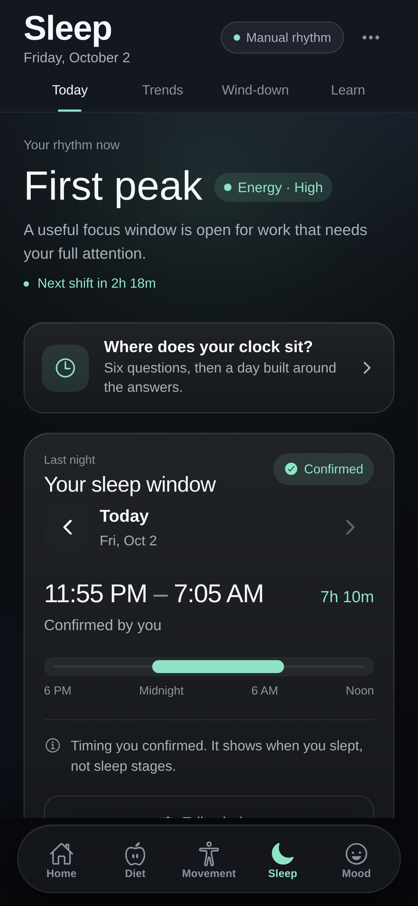

3:07
‹
J
Jordan
active now
Today 3:07 PM
why am i SO tired rn
every. single. day. 🫠
that's coffee #3 💀
Your 3 p.m. crash is
predictable.
I thought I just needed
more coffee.
REWIND
today's battery
3:07 PM
6h sleep
1:04 AM – 7:02 AM
No breakfast
7:30 AM
4 meetings
back to back from 9
Tuesday
12 PM
1 PM
2 PM
3 PM
Energy crash
BOOKED
By 9 a.m., the crash
was already
booked.
Tuesday, October 6
7:02
daywoven
now
Short night. Heads-up:
Your energy will likely dip around 2:30 PM.
ONE THING
30 min of daylight before 8.
Got it
✓ Done
So I built an app that
sees it coming.
And gives you
one thing to do.
Then
I
added
this…
It learns your rhythm.

Confidence
Low
Medium
High
Week 1
Week 2
Week 3
sharper every week.
3:09
‹
J
Jordan
active now
why am i SO tired rn
Your 3 p.m. crash is
predictable.
😂
WAIT this is literally me 😭
Send this to the friend
who's always tired at 3.
Know your 3 p.m. at 7 a.m.
d
a
y
w
o
v
e
n
Link in bio ↗